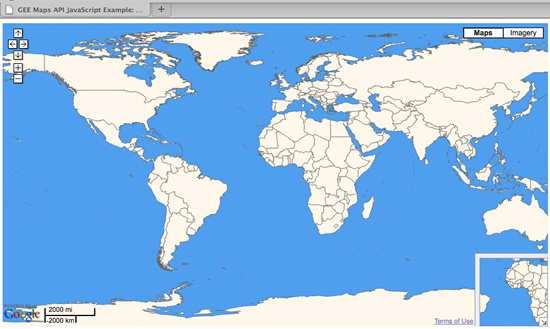
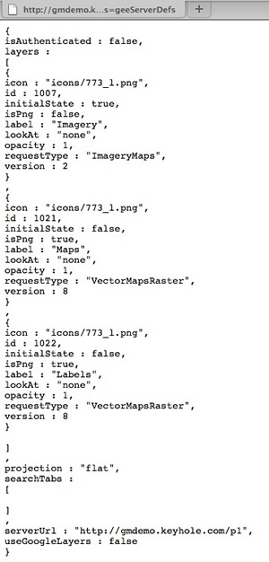
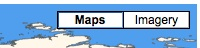
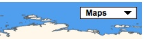

Google Earth Enterprise Documentation Home | Fusion resources and projects
Map buttons
If you're using version 2.x of the Maps JavaScript API, the procedure below explains how to create map buttons for GEE. However, this procedure isn't compatible with Maps API 3.x.
GEE includes a default web interface for viewing the 2D maps that you build with Fusion and host on a GEE 2D virtual server. In the example below, the left panel shows map layers that are published with the database.

Data courtesy of Thematic Mapping.org, http://thematicmapping.org/
The default interface doesn't include layer buttons like the “Maps, Satellite, Hybrid” buttons in Google Maps. However, you can do some HTML and JavaScript editing to display Maps, Imagery, and Hybrid layer buttons that are similar. The example map below displays a Maps button for its two map layers and an Imagery button for its imagery layer.

Data courtesy Thematic Mapping.org, http://thematicmapping.org/
To create buttons like this, associate the Maps, Imagery, and Hybrid (Show Labels) buttons with map types that you define with GMapType. In Google Maps, map types are constants that can be called directly. However, in GEE you need to use GMapType to define map types in the interface itself because the map and imagery layers are different for each map.
To define map types in GEE:
- Use
GFusionTileLayerto define a new tile layer for each map or imagery layer.GFusionTileLayercan directly reference the array where the map and imagery layers are stored. - Pass these two constructors to the
GFusionTileLayerclass:- The URL of the hosting server.
- The layer definition. The definition includes information like the version of the tiles, the channel ID number, and whether the tiles are in PNG format.
- Specify which layer in the
geeServerDefsarray to select for eachGFusionTileLayerobject.- The imagery layer is layer 0.
- The maps layer is layer 1.
- The hybrid (Show Labels) layer is layer 2.
var imagery_map_layer = new GFusionTileLayer(geeServerDefs.serverUrl, geeServerDefs.layers[0]);
var painted_map_layer = new GFusionTileLayer(geeServerDefs.serverUrl, geeServerDefs.layers[1]);
var labels_layer = new GFusionTileLayer(geeServerDefs.serverUrl, geeServerDefs.layers[2]);You can access the server definitions and other information about map and imagery layers directly from a web browser by using a URL in this format:
http://yourserver.org/virtual-server-name/query?request=Json&vars=geeServerDefs. Responses will look like the image below:
- Associate layers with buttons by using the
GMapTypeclass to define a map type for each of theGTileLayerobjects. See the example below:var painted_map_type = new GMapType([painted_map_layer],new LatLngProjection(MAX_ZOOM_LEVEL),"Maps");
var imagery_map_type = new GMapType([imagery_map_layer],new LatLngProjection(MAX_ZOOM_LEVEL),"Imagery");
var labels_map_type = new GMapType([imagery_map_layer, labels_layer],new LatLngProjection(MAX_ZOOM_LEVEL),"Hybrid"); - Use the
.addMapControl()method to add each map type and its associated button to the map:map.addMapType(painted_map_type);
map.addMapType(imagery_map_type);
map.addMapType(labels_map_type); - Remove the predefined Google Maps map types below so that the buttons display correctly:
map.removeMapType(G_SATELLITE_MAP);// Remove the default Satellite Map Type button
map.removeMapType(G_HYBRID_MAP);// Remove the default Hybrid Map Type button
map.removeMapType(G_NORMAL_MAP);// Remove the default Map Type button - Add controls (like the zoom bar, the navigation bar, an overview map, and zooming options) to the map:
map.addControl(new GSmallMapControl());
map.addControl(new GOverviewMapControl());
map.addControl(new GScaleControl());
map.enableScrollWheelZoom(); map.enableContinuousZoom();
Display a drop-down menu instead of buttons
You can show a drop-down menu for the map layers instead of the side-by-side buttons, as shown below.
|
Standard map type buttons |
Drop-down menu for map types |
|  |  |
To accomplish this, replace the GHierarchicalMapTypeControl call with a GMenuMapTypeControl.
Maintenance considerations
The layer ordering in geeServerDefs changes for each new version, so if you add more map layers or reorder the existing map layers in your 2D Map Database after you implement the HTML page, you must also update your GFusionTileLayer definitions so that the GEE Server requests the correct layer.
Make the HTML example the default display
You can set the example HTML file as the default view by changing one of the settings in the server configuration file. See below for an example of a location-based 2D virtual server configuration file.
In this example, the server is hosted at
http://machine123.company.internal/mapexample - /opt/google/gehttpd/conf.d/virtual_servers/example.location.
# The mapexample virtual server
RewriteRule ^/mapexample$ /mapexample/ [R]
RewriteRule ^/mapexample/+$ /maps/maps_local.html [PT]
RewriteRule ^/mapexample/+maps/+mapfiles/(.*)$ /maps/mapfiles/$1 [PT]
<Location "/mapexample/*">
SetHandler gedb-handler Include conf.d/virtual_servers/runtime/example_runtime
</Location>
In the example above, the second RewriteRule specifies that the /maps/maps_local.html web page is loaded whenever users visit the virtual server URL http://machine123.company.internal/mapexample.
You can change this setting to load a different web page:
# The mapexample virtual server
RewriteRule ^/mapexample$ /mapexample/ [R]
RewriteRule ^/mapexample/+$ /maps/gmaps_buttons.html [PT]
RewriteRule ^/mapexample/+maps/+mapfiles/(.*)$ /maps/mapfiles/$1 [PT]
<Location "/mapexample/*">
SetHandler gedb-handler Include conf.d/virtual_servers/runtime/example_runtime
</Location>
After you make changes to the file, restart the GEE Server to reload the configuration file and implement the change.
Access the imagery tiles hosted from another GEE 2D virtual server
You can use the GTileLayer Maps API class to access the web page for imagery layers that are published from different GEE servers. Then you can follow the same instructions above to assign the layer to a custom map type and display a button for it on your map.
Data used to build the map and imagery tiles
Map data
You can obtain a complete copy of the 2D Map layer display rules from the Google Earth Enterprise Google Group Files section. The maps and hybrid (Show Labels) map layers were built from three different datasets:
- Global borders (filled and outlined) in the maps and hybrid layers were created from the the Thematic Mapping World Borders dataset, available under a Creative Commons license at http://thematicmapping.org/downloads/world_borders.ph
- USA state boundaries in the maps and hybrid layers were created from the USA States borders vector data hosted by the National Atlas of the USA (now called the National Map). You can download state boundaries from https://nationalmap.gov/small_scale/atlasftp.html.
- The background water that is visible in the maps layer was created with a global KML file. You can obtain the KML water file from the Google Earth Enterprise Google Group Files section.
Imagery data
Imagery for the globe was built from two different sources:
- BlueMarble 500-meter global imagery (combined surface and bathymetric imagery) was used as the backdrop for the image.
- A reduced resolution (120-meter) version of imagery from the Premium Globe dataset was used for land imagery.